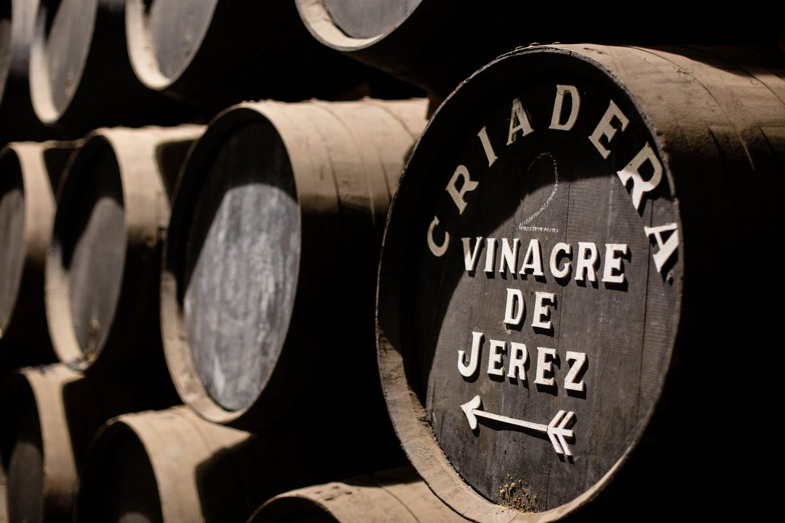

The Best Chef Awards 2020
Se acaban de dar a conocer los premios “The Best Chef Awards 2020”. En una gala de entrega de premios virtual, la comunidad gastronómica internacional ha elegido al chef René Redzepi como el “The Best Chef Top100 Award”, seguido por el chef Björn Frantzen (ganador del año pasado), y el chef Dan Barber en tercera posición. La lista del 2020 cuenta con chefs de 31 países de todo el mundo, y España obtiene el mejor resultado con 15 chefs entre los cien mejores.

La gala anual de premios “The Best Chef” siempre ha sido un evento global con la asistencia de chefs de todo el mundo que viajaban desde sus países para asistir a la gala culinaria más exclusiva del mundo de la gastronomía. En esta edición, y para garantizar la seguridad de todos y teniendo en cuenta la normativa COVID19 vigente, los premios “The Best Chef” decidieron volver a sus raíces, presentando su Top100 a través de un programa online de alta calidad y organizando conferencias híbridas como Area Talks y Food Meet Science.
25 Aniversario de la DOP Vinagre de Jerez
Este 2020 se cumplen 25 años de la creación de la DOP Vinagre de Jerez. Todo un hito que señaló el surgimiento de la primera Denominación de Origen de España para un condimento de este tipo, con una enorme relevancia en la consolidación del prestigio de este singular producto. Y es que, aunque la historia del Vinagre de Jerez se remonta muchos siglos atrás, la constitución de la Denominación de Origen Protegida supuso la culminación de un proceso con el que se acredita el carácter único y genuino del que hoy se erige como condimento estrella de la gastronomía. Este hecho, de enorme valor tanto para el Consejo Regulador como para las bodegas productoras, supone nada menos que la ratificación y protección de la calidad y de las señas de identidad de un vinagre jerezano, inimitable y excepcional. Para conmemorarlo, el Consejo Regulador de la DOP Vinagre de Jerez, conmemorará esta fecha tan especial con un programa de actividades y eventos online que implicarán tanto a profesionales cómo consumidores finales en la peculiar historia y elaboración del Vinagre de Jerez, además de poner de manifiesto, de la mano de reconocidos expertos, su enorme relevancia tanto en la gastronomía tradicional andaluza como en la alta cocina más cosmopolita y actual.

Tanto para el Consejo Regulador como para las bodegas productoras, una fecha tan destacada debía ser celebrada y, sobre todo, compartida con profesionales y aficionados a la gastronomía, ofreciendo al público interesado, a través de diferentes actividades, una oportunidad única para profundizar en el conocimiento y en los usos culinarios del Vinagre de Jerez. El pistoletazo de salida a estas actividades conmemorativas ha sido la edición de la primera gran obra monográfica sobre el condimento jerezano “Vinagre de Jerez El Mejor Aderezo del Mundo”, publicado por Planeta. Un tratado sin precedentes, resultado de la colaboración de grandes expertos, gastrónomos y cocineros que, desde sus diferentes perspectivas, aportan una visión heterogénea y a la vez global de la relevancia y singularidad de este producto.

El presidente del Consejo Regulador, César Saldaña, y el embajador de la DOP para la gastronomía, José Ferrer, han sido los responsables de la redacción de esta publicación que, prologada por José Carlos Capel, cuenta además con una selección de recetas de algunos de los chefs españoles más prestigiosos del momento que nos ofrecen algunas pistas sobre el enorme potencial gastronómico del Vinagre de Jerez. A la publicación de este libro le seguirán dos semanas de celebración que incluirá, entre otras actividades, la difusión en diferentes plataformas online de contenidos inéditos en torno al Vinagre de Jerez, además de promociones y sorteos para seguidores. Y, como citas especiales, la celebración de dos grandes eventos digitales interactivos: